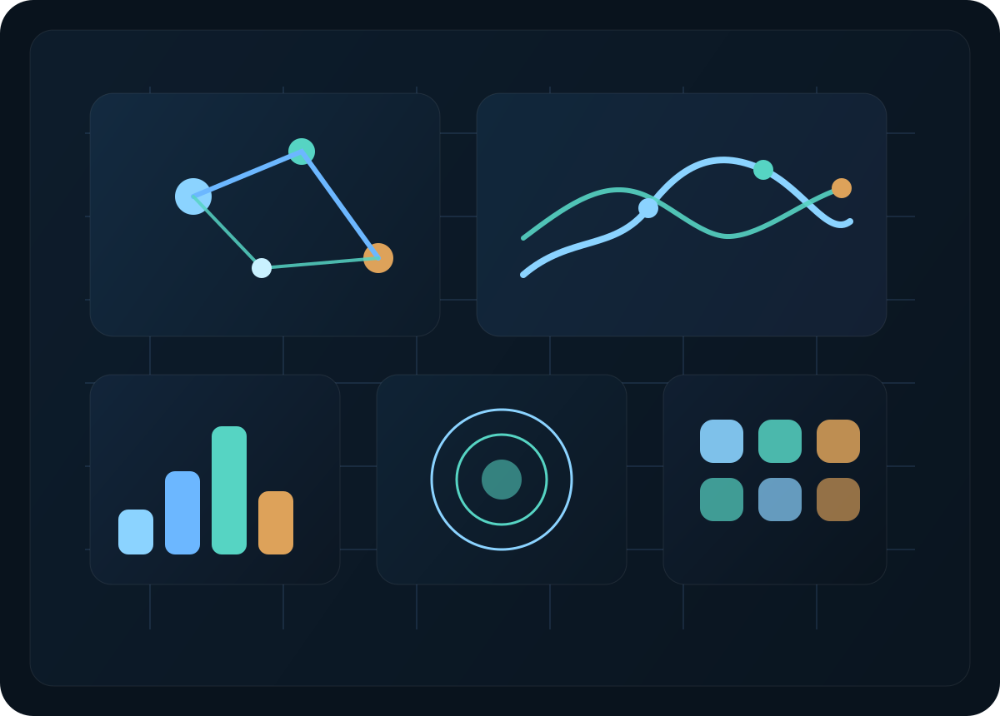

Multi utility intelligence for the operational edge
AMI intelligence
Field orchestration
Service continuity
One control layer for utility networks.
Noethon helps electricity, gas, water and smart city teams work from the same operational picture. We connect meter events, field workflows, asset context and service intelligence so operators can move faster, respond earlier and manage growth with less fragmentation.
Built for grid edge operations
Designed for phased deployment
Structured for utility teams
Electricity
Gas
Water
Smart City
NOETHON COMMAND CENTER
grid edge live
North corridor utility region
Operational view
We start where utility teams already feel the pain: disconnected meter data, delayed field response, fragmented visibility and inconsistent service execution.
Built for phased rollout, measurable workflow gains and expansion across electricity, gas, water and smart city operations.
About Noethon
Built for operators who need clarity across electricity, gas, water and urban infrastructure.
Most utility teams still switch between meter systems, dispatch tools, spreadsheets and disconnected dashboards. Noethon brings those operating signals together so planners, operations leads and field teams can act from one shared view.
The result is a practical control layer for multi utility operations: faster exception handling, stronger service continuity, better field prioritization and a clearer path from meter data to operational decisions.

Operations intelligence
Meter signals, field teams and city edge assets mapped into one coordinated visual layer.
Platform
A platform designed around the work utilities actually do.
Unified Operations Console
A shared environment for alarms, work queues, asset context, service issues and field follow through.
Utility Data Context
Meter reads, endpoint events, account context, location data and operating history are organized into one readable layer.
Response Intelligence
Priority scoring, anomaly handling and guided workflows help teams resolve problems sooner and with less manual triage.
Partner Ready Architecture
Built to support pilots, municipal programs and strategic utility partnerships without creating another isolated software silo.
Utility coverage
Detailed operating value across the full multi utility stack.
Improve situational awareness across the grid edge.
Support outage visibility, voltage events, transformer level context, tamper detection and faster field dispatch.
- AMI event monitoring and exception handling
- Outage and restoration coordination
- Revenue protection and loss visibility
Strengthen safety, pressure awareness and service continuity.
Give gas operations teams clearer visibility into field conditions, service status, shutoff activity and abnormal consumption behavior.
- Leak and pressure related event escalation
- Service order and shutoff workflow support
- Customer and crew coordination during incidents
Detect waste sooner and operate with tighter control.
Connect metering intelligence with operational follow up to reduce non revenue water, shorten leak response time and improve continuity.
- Leak and burst related signal prioritization
- Consumption anomaly review
- District and service area visibility
Coordinate urban services without fragmenting city operations.
Extend the same operational model to lighting, environmental sensing, distributed assets and service coordination across the city edge.
- Streetlight and distributed asset visibility
- Cross department operational coordination
- Shared intelligence for city service teams
Why it matters
Utility performance breaks down when meter intelligence, field execution and asset context live in separate places.
Utilities do not need another dashboard layer. They need a working environment that connects event streams, operational priorities and response teams in real time.
That is where Noethon is focused: turning raw utility signals into operational context that supports faster decisions, cleaner execution and better service outcomes across multiple utility domains.
Operating model
Structured to support pilots now and broader deployment over time.
Operational Baseline
Start with meter events, service exceptions, field work queues and the workflows that affect response time.
Cross Utility Expansion
Extend from one operating domain into electricity, gas, water and city services using the same control model.
Decision Layer
Introduce prioritization, planning support and broader operational intelligence once the data and workflow layer is established.
Partners
Designed for utilities, municipalities and strategic deployment partners.
Noethon is positioned for organizations that care about operational reliability, better service visibility and a scalable path for multi utility modernization.
That includes forward looking utilities, municipal operators, infrastructure programs and strategic partners who want a more connected operating model without another fragmented software layer.
Where Noethon fits
- Utility pilot programs
- Municipal smart infrastructure initiatives
- AMI and operations modernization programs
What the platform supports
- Faster exception response
- Clearer field and service coordination
- One operational view across utility domains
Smart city continuity
Smart city infrastructure should operate with the same discipline as utility networks.
Noethon extends beyond metering. The same platform logic can support city lighting, distributed environmental sensing, public asset visibility and coordinated service operations where urban infrastructure needs tighter control.
Contact
Talk with us about utility operations, pilots or strategic partnership.
If you are building in electricity, gas, water or smart city operations, we can explore where Noethon fits into your operating model.
info@noethon.com